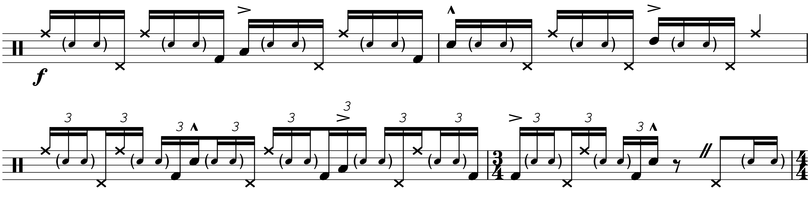
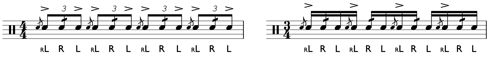
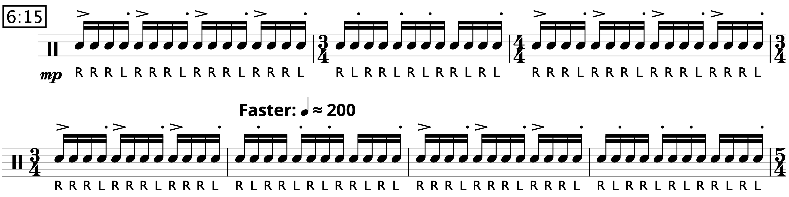
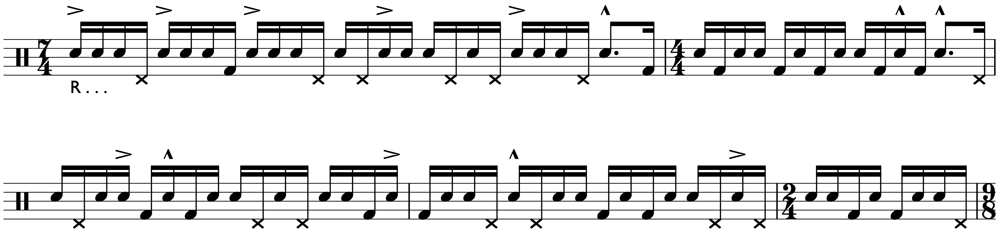

Transcription: “Time Check” — Gregg Bisonette with The Buddy Rich Big Band

This is part 2 of my posts concerning the 1989 Buddy Rich Memorial Scholarship concert. Today, we’re looking at Gregg Bisonette’s playing from “Time Check”. Gregg did a fantastic job that night; his playing on “In A Mellow Tone” swings harder than almost anything else from the show, and he goes very hard on this chart:
This was the actually the first thing I tackled from the concert. It all started with this lick starting around the 5:00 mark, a cool linear hi hat joint featuring the left foot pedal. Gregg plays it as 16th notes before playing the same pattern as 16th note triplets. It’s a lot of fun to play:
Once I got that worked out, I took a look at some of Gregg’s other playing. I’ve worked out some of the more exciting moments of the chart, such as the build up before the tenor solo. A favorite moment of mine that happens at the climax of the tenor solo, at the 2:40 mark. The whole band is going 100 miles an hour, and I’ve worked that out as well.
I’ve also featured the shout chorus finale, including the solo leading into this section:
In this solo is a flam lick that confounded me for some time — you can hear Gregg play it all throughout the tune. I suspected it was a favorite chop of his, but since this was my only exposure to Gregg at the time I struggled to get it worked out. That is until, by chance, Gregg posted a video with Drumeo back in December of last year explaining it. It’s essentially the blushda, which is a flam drag rhythm played with shuffle sticking, usually rLRL. Often, a shuffle accent pattern is also thrown in:
A related concept includes the Swiss drag, a flam drag rhythm played with Swiss army triplet sticking. Although most of these “hybrids” come out of drum corps, the blushda seems to be a drum set lick these days. I feel that Swiss drags and standard flam drags are much more common in the drumline world, while the blushda is one of the few hybrids a typical drum set player is likely to know about. In fact, drum set players all over the internet became obsessed with the blushda about 5 years ago.
Most of the blushda licks in the solo are played with a left hand lead; that is, a right hand grace note. Also, the drags are often played somewhere in between a proper 32nd note double and a buzzed stroke. Listen closely to the recording to hear what I’m taking about.
Also, be aware that Gregg does a lot of left hand comping when he's playing with the band. I tried to notate it best I could, but I didn't write anything down I couldn't clearly see on the video.
After the shout chorus, Gregg starts an extended solo. Gregg kicks off the solo with steady quarter notes on the feet while ad-libbing some fills on top. This section includes a 5 over 2 polyrhythm, which is much easier to play than you think. Quick aside, you should be comfortable being able to play almost any subdivision over a quarter note pulse, at reasonable tempos.
The main transcription starts back up when Gregg moves into a latin groove, grounded with a tresillo-style rhythm. A bit unusual for a swing tune, but it’s a grooving section nonetheless. We could have arguments all day over whether or not it fits, but I don’t really care because I think it sounds great. It doesn’t look like much on paper, but once you play the groove you’ll realize how busy it is.
Gregg starts to break out the double kick after the hi hat pedal lick, including this cool nested triplet thing (the time’s a little loosey goosey). I find a lot of Gregg’s double bass licks to be very tasteful and hip, and much of his playing makes up what standard double bass vocabulary is in the 21st century.
A very, very demanding paradiddle-diddle passage gives us the first big climax of the solo. The actual diddles are a bit crushed, and sound closer to buzzes with how fast they are played.
This was another segment that confounded me; I ending up tracking down a video Gregg made around 1992 called Private Lesson (a creative name I know). I gave it a watch, and lucky for me Gregg explicitly breaks this lick down as paradiddle-diddles.
I originally called it a day after this section, but I wanted to take a quick look at some of the brush playing that comes next. Gregg has some pretty typical swing moves, with a lot of feel, but notice what he does with sixteenth notes — he seems to be a fan of playing extended strokes on the right hand and throwing in short, left hand sweeps. I did my best to notate them with staccato dots, but ultimately I had to include the sicking:
He also dishes out some rather intricate linear moves:
I decided to finally call it a day after that. With regards to what comes next, Gregg really shows off the double kick chops with some blast beats starting at 7:04. If there’s any part of the solo I find jarring, it’s this moment. I suspect Gregg was trying to show off his double bass skills; he definitely had the best double kick abilities of anyone there that night, but it does come out of nowhere. I think it has more to do with hitting a solid 2 and 4 rather than shredding on the kick (the whole chart doesn’t really call for strong rimshot backbeats at all, let alone a rock-style 2 and 4).
I skimped out on notating the final part of the solo because I’m not terribly interested in double kick playing overall, since I don’t double bass. At the bottom of this list is the blast beat. There’s nothing terribly complicated going on for the finale.
FYI, the caesura mark shows up for very subtle pauses in time, too subtle to be notated rhythmically without making use of an obnoxious /32 or /64 time signature, which I don’t think would be helpful.
Gregg seems to be working with some solo concepts he was developing specifically in the late 80’s early 90’s. There’s an excerpt on YouTube from the beginning of Private Lesson: a 14 minute solo where Gregg uses a lot of the same ideas from the Memorial Concert solo:
(I apologize for the fidelity of the video — it’s only from 2010 but it looks like a potato VHS rip and I couldn’t find another version. Win some lose some I guess. I can’t help but laugh at the description: “Best available quality”. Give me a break.)
One last thing: the chart is a fast 4 (played as half note = 144), but I have the solo section notated in what would be half time. I could have done the whole thing in double time, but that would have been dreadful to transcribe and even worse to read. Plus, I don’t think that’s how Gregg counted it.
Gregg's appearance that night is pretty interesting. I think out of all the drummers who were there, Gregg was probably the most mainstream, recording touring around wth David Lee Roth and all that (check out a hiliarious video of Gregg explaining how he joined DLR). I have a feeling that many dismiss Gregg and pigeonhole him as a flashy glam rock drummer, but he definitely knows his way around many styles. Gregg studied jazz and played with guys like Maynard Ferguson, so I say embrace the hair and his ridiculous Pearl double kick setup.
*Gregg bundled this video with another one of his, Playing, Reading, and Soling with a Band, into a new video called Gregg Bisonette: Yesterday, Today, Tomorrow that features some new material he shot in 2012. It’s much cheaper than either of the videos individually, although it does not have the play-along books included. You’ll have to get those separately.
Posted on October 18, 2020
Tags: Transcriptions • 2020 • Gregg Bisonette • The Buddy Rich Big Band • 1989 Buddy Rich Memorial Concert